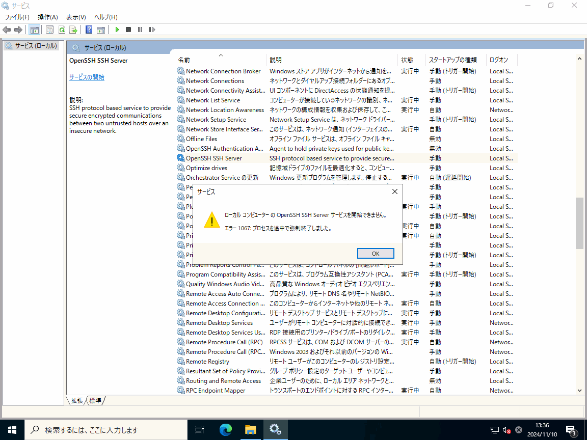
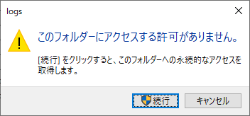
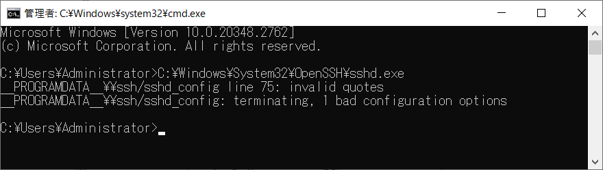
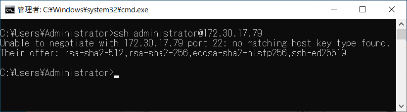

本記事はマイクロソフト社員によって公開されております。
こんにちは、Windows サポートの丸山です。
Windows 10 以降のクライアント OS、および Windows Server 2019 以降のサーバー OS では、OpenSSH for Windows が標準で搭載されておりますが、2024 年 10 月の更新プログラムを適用いただくことで、OS 標準搭載の OpenSSH のバージョンが v9.5 に更新されます。
バージョンが更新されることで、最新の機能が使用できるようになるなどのメリットがございますが、以前のバージョンからの非互換により、OpenSSH Server サービスが起動しなくなってしまう、あるいはネットワーク上の OpenSSH クライアントから接続が出来なくなった、等の事例が報告されております。
本記事では、2024 年 10 月の更新プログラム適用後に発生する OpenSSH for Windows の問題について、事例や対処策をご紹介させていただきます。
※ 弊社提供の OpenSSH for Windows は、提供形態の違いにより、下記の 2 種類ご用意がございます。
2024 年 10 月の更新プログラムの適用にあたりましては、上記のうち、Windows に同梱される OpenSSH for Windows が更新されます。GitHub から提供される OpenSSH for Windows につきましては 2024 年 10 月の更新プログラムによる更新は行われません。
(1) %programdata%\ssh フォルダーあるいは %programdata%\ssh\logs フォルダーのアクセス権チェックの影響を受けて OpenSSH Server サービスの起動がエラーになる
バージョン 9.4 以降の OpenSSH for Windows では、OpenSSH Server の起動時に %programdata%\ssh (※既定では C:\ProgramData\ssh) フォルダーおよび %programdata%\ssh\logs (※既定では C:\ProgramData\ssh\logs) フォルダーのアクセス権チェックを行い、ビルトイン Administrators グループ、および SYSTEM アカウント以外のユーザーが書き込み権限を持っていると判断された場合、起動がエラーになるよう、動作が変更されました。
※該当の Pull Request はこちらになります。
https://github.com/PowerShell/openssh-portable/pull/686/files
この動作変更の影響を受け、2024 年 10 月の更新プログラムが適用された環境では、フォルダーのアクセス権に意図しないアクセス権が付与されていると検知された場合、OpenSSH Server の開始が、エラー 1607 で失敗するようになりました。

特に %programdata%\ssh\logs フォルダーには、既定の構成においてビルトイン Administrators グループ、および SYSTEM アカウント以外アカウントにはアクセス権が付与されておりませんので、管理者権限を持つアカウントがフォルダーを開こうとしたタイミングでエクスプローラーによるアクセス権の取得を行うかどうかの確認ダイアログが表示され、”続行” を押下することで、意図せずして管理者アカウントにフルコントロール権限が付与されていることがございます。

2024 年 10 月の更新プログラムの適用後に OpenSSH Server サービスが起動しなくなってしまった場合には、まずは %programdata%\ssh (※既定では C:\ProgramData\ssh) フォルダーおよび %programdata%\ssh\logs フォルダーのアクセス権を確認してください。
また、多くの場合、%programdata%\ssh\logs フォルダーの削除、あるいはリネームを行うことで状況が改善されますので、お試しいただけますと幸いです。
(2) sshd_config のパーサーが変更された影響を受けて OpenSSH Server サービスの開始がエラーになる
2024 年 10 月の更新プログラムが適用された OpenSSH では、sshd_config のパーサーに変更があり、この影響により、エスケープ シーケンスを含む sshd_config の読み取りに失敗し、OpenSSH Server サービスの起動に失敗する事例が報告されております。
一例として、sshd_config に以下のような記述があった場合、2024 年 10 月の更新プログラムが適用された環境では OpenSSH Server の起動がエラーになります。
ChrootDirectory “F:\“
2024 年 10 月の更新プログラムが適用された環境では、下記のように記述することで、OpenSSH Server サービスが起動できるようになります。
ChrootDirectory “F:\\“
sshd_config の記述の影響により OpenSSH Server サービスの開始に失敗する場合、以下のように sshd.exe をコマンド プロンプトからフルパスで実行することで、エラーが検出された行番号を確認できます。
C:\Windows\System32\OpenSSH\sshd.exe

上記のように、sshd_config の読み取りがエラーとなっている場合、該当箇所の記述の見直しをお願いします。
(3) ssh-rsa を要求するクライアントからの接続が失敗する
バージョン 8.8 以降の OpenSSH では、ssh-rsa アルゴリズムによる鍵交換が既定で無効になりました。
この問題の影響を受けている場合、OpenSSH Server の起動はエラーにはなりませんが、ssh-rsa アルゴリズムを使用するクライアントからの接続がエラーになります。
以下は、HostKeyAlgorithms に ssh-rsa のみを使用可能としたクライアントから、2024 年 10 月の更新プログラムが適用された OpenSSH Server に接続しようとしたときのクライアント側でのエラーの例です。使用可能な鍵交換アルゴリズムに ssh-rsa が含まれていないため、ネゴシエーションに失敗していることがわかります。

こちらは、クライアント側でより新しい鍵交換アルゴリズムに対応するよう、バージョンアップなどの対応をいただくことが望ましい状況ではございますが、運用面の都合などによりクライアントの更新が難しい場合には、以下のような記述を sshd_config に追加して、古いバージョンのクライアントを持つホストからの接続時には ssh-rsa のアルゴリズムを一時的に許可いただくことでも対応可能です。
HostkeyAlgorithms +ssh-rsa
PubkeyAcceptedAlgorithms +ssh-rsa
(4) scp コマンドの実行時に非互換が発生する
バージョン 9.0 以降の OpenSSH では、scp コマンド実行時に既定で使用される内部プロトコルが scp から sftp に変更されました。
弊社提供の Microsoft 版 OpenSSH サーバーを対象とした scp コマンドによるファイルのコピーにおきましては、問題の報告はございませんが、他社提供の OpenSSH サーバー利用時には、プロトコルの変更による非互換が発生する可能性がございます。
https://www.openssh.com/txt/release-9.0
Potentially-incompatible changes
-——————————-
This release switches scp(1) from using the legacy scp/rcp protocol to using the SFTP protocol by default.
上記ドキュメントにも記載がございますように、v9.0 以降の scp コマンドには互換性の問題に対応するため、従来の scp プロトコルを使用するための -O オプションが用意されております。
もし、scp コマンドのご利用時に、非互換と思われるような動作の違いが確認されました場合には、scp コマンドの実行時に -O オプションを付与いただく対処について、ご検討いただけますと幸いです。
2 種類の OpenSSH for Windows について
最後に、あらためての補足になりますが、本 BLOG では 2024 年 10 月の更新プログラムの適用にあたり、Windows に同梱される OpenSSH for Windows が更新されることで発生する事象についてご紹介しております。
Windows に同梱される OpenSSH for Windows につきましては、今後も OS の更新プログラムとともに必要に応じてバージョンの切り替えが行われますが、GitHub から提供される OpenSSH for Windows につきましては、OS の更新プログラムの適用によりバージョンが切り替わることはございませんので、バージョンの切り替えが必要な場合には、管理者様自身にて差し替えていただく必要がございます。
弊社では、他にも 2024 年 10 月の更新プログラムの影響により OpenSSH for Windows の動作に影響が及ぶ例外ございました場合、本 BLOG の更新にてご紹介していきます。
参考 URL
変更履歴
- 2024/11/12 : 本 Blog の公開
- 2025/01/06 : アクセス権のチェックに関する記述を修正しました
- 2025/04/02 : (4) scp コマンドの実行時に非互換が発生する の項目を追記しました